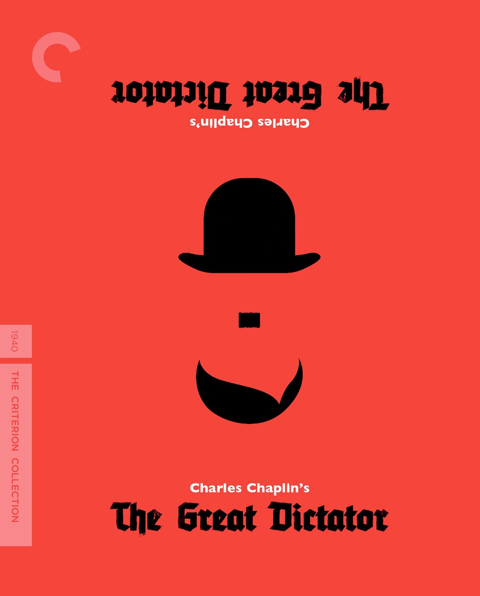

49:25 · 5 OPERE
I saggi sull'antisemitismo di Jean Améry.
Il filo del discorso
La presentazione dei saggi di Jean Améry sull’antisemitismo si apre con una lunga riflessione sulla responsabilità di conoscere. Caldarella collega sentimento morale, meraviglia filosofica, formazione generale e capacità di riconoscere le contraddizioni, distinguendo il seguire passivamente una opinione dal farsene sostenitori senza averla esaminata. Nella seconda parte commenta Antisemitismo virtuoso del1969 e altri passaggi della raccolta curata da Marlene Gallner: al centro è la denuncia di Améry di un odio antiebraico che può assumere il linguaggio della emancipazione e della sinistra. Il relatore propone l’antisemitismo come segnale di un pericolo sociale più ampio, alternando traduzioni estemporanee e applicazioni al presente. La scheda distingue queste applicazioni dalla verifica dei singoli discorsi e ricorda che la critica a un governo non equivale automaticamente a ostilità verso gli ebrei. Aneddoti su King e Camp David restano attribuzioni da riscontrare; Sartre compare nella conclusione. Il tema comune è la necessità di giudicare argomenti, stereotipi e responsabilità senza affidarsi alla sola appartenenza politica.
I libri nel discorso
Essays on Antisemitism, Anti-Zionism, and the Left
Identificazione probabile
Copertina: Indiana University Press, gennaio 2022, 124 pagine, edizione rilegata ISBN 9780253058751; cura Marlene Gallner, traduzione Lars Fischer, prefazione Alvin H. Rosenfeld. Copertina autentica del catalogo editoriale. La stampa mostrata nella lezione non è stata verificata sul video.
Immagine autentica dell’opera, controllata visivamente; l’edizione di riferimento non è attribuita al filmato.
Améry, Marlene Gallner, Indiana University Press e temi della raccolta convergono; edizione mostrata non verificata sul fotogramma.
Passaggio 0:50 ↗ · Fonti e libro ↗Antisemitismo virtuoso (Virtuous Antisemitism,1969)
Copertina della raccolta che contiene il saggio: Copertina della raccolta Essays on Antisemitism, Anti-Zionism, and the Left, Indiana University Press, cura Marlene Gallner, traduzione Lars Fischer. Saggio del1969, non volume autonomo; distinto da Virtuous Antisemitism: Address on the Occasion of Jewish-Christian Brotherhood Week del1976. La copertina riutilizza la immagine editoriale già verificata.
Copertina della raccolta Indiana University Press, non una copertina autonoma del saggio1969. Nell’indice sono presenti due testi omonimi, del1969 e del1976; non vengono fusi in una sola cronologia.
Titolo Antisemitismo virtuoso esplicito e anno1969 dichiarato a1714s; distinto dall’intervento omonimo1976.
Passaggio 1:57 ↗ · Fonti e libro ↗
Teeteto, o sulla scienza
Identificazione probabile
Copertina: Feltrinelli · 1994 · traduzione di Luca Antonelli, introduzione di Salvatore Natoli, saggio di Davide Spanio
Immagine autentica dell’opera, controllata visivamente; l’edizione di riferimento non è attribuita al filmato.
Meraviglia come origine della filosofia e Iris figlia di Taumante: probabile Teeteto155d, titolo non pronunciato.
Passaggio 3:40 ↗ · Fonti e libro ↗
Il grande dittatore (The Great Dictator)
Grafica dell’edizione video Criterion: Film statunitense del 1940, United Artists, regia e sceneggiatura di Charles Chaplin, 125 minuti. Immagine della grafica Criterion, numero 565, disegnata da Olly Moss; non copertina libraria o locandina originale.
Grafica autentica della edizione video, con le due identità rappresentate in orientamenti opposti. La voce riguarda un film.
Charlie Chaplin e Il grande dittatore espliciti come esempio della satira del potere.
Passaggio 39:43 ↗ · Fonti e libro ↗
Réflexions sur la question juive
Copertina: Gallimard · Folio essais 10 · 1985 · francese
Immagine autentica dell’opera, controllata visivamente; non identifica l’edizione usata nel video.
Antisemita ed Ebreo esplicito: Anti-Semite and Jew è il titolo inglese1948 di Réflexions sur la question juive, originale1946.
Passaggio 48:38 ↗ · Fonti e libro ↗Minutaggi ricavati da testi automatici, da riascoltare. Le identificazioni probabili sono segnalate accanto ai libri.